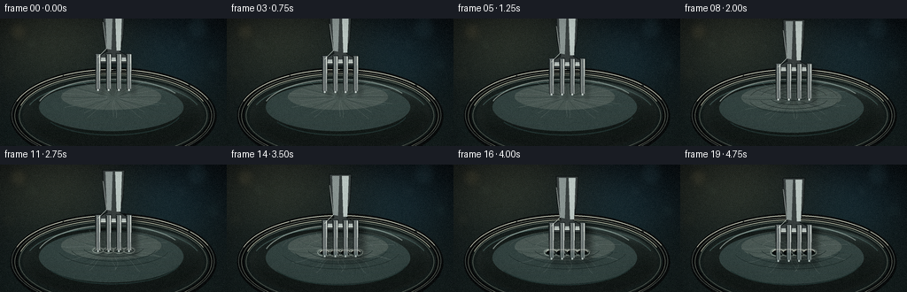
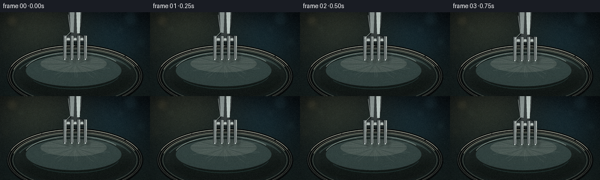

CODING AGENTS AS PIXEL WORLD MODELS
traex/DeepSeek-V4.1-Flash · phygen_023
点击播放 · 原生 RGB 像素
逐轮保存的候选
回放视频、检查图与代码变化。
每份候选均可单独播放。实际图片检查记录在下方工具轨迹中。
候选 01播放与检查图
点击播放 · 原生 RGB 像素
展开代码变化
--- 上一保存版本
+++ 本次保存版本
@@ -0,0 +1,487 @@
+"""Procedural RGB-video generation for the fork and plastic-wrap prompt."""
+
+from pathlib import Path
+
+import numpy as np
+from PIL import Image, ImageDraw, ImageFilter
+
+import artifact_io
+
+
+WIDTH, HEIGHT, FRAME_COUNT = 256, 144, 20
+SUPERSAMPLE = 4
+S = SUPERSAMPLE
+CASE_DIR = Path(__file__).resolve().parent
+
+
+def sc(value):
+ return int(round(value * S))
+
+
+def box(x0, y0, x1, y1):
+ return tuple(sc(v) for v in (x0, y0, x1, y1))
+
+
+def xy(points):
+ return [(sc(x), sc(y)) for x, y in points]
+
+
+def smoothstep(x):
+ x = np.clip(x, 0.0, 1.0)
+ return x * x * (3.0 - 2.0 * x)
+
+
+def rgba(color, alpha=255):
+ return tuple(int(v) for v in color) + (int(alpha),)
+
+
+def gradient_background():
+ y = np.linspace(0.0, 1.0, HEIGHT * S, dtype=np.float32)[:, None]
+ x = np.linspace(0.0, 1.0, WIDTH * S, dtype=np.float32)[None, :]
+ top = np.array([7, 12, 15], dtype=np.float32)
+ bottom = np.array([22, 34, 34], dtype=np.float32)
+ rgb = (
+ top[None, None, :] * (1.0 - y[..., None])
+ + bottom[None, None, :] * y[..., None]
+ + np.zeros((1, WIDTH * S, 1), dtype=np.float32)
+ )
+
+ # Broad studio illumination, kept soft so the fork and membrane remain dominant.
+ warm = np.exp(-(((x - 0.22) / 0.35) ** 2 + ((y - 0.14) / 0.42) ** 2))
+ cool = np.exp(-(((x - 0.76) / 0.24) ** 2 + ((y - 0.30) / 0.34) ** 2))
+ rgb += warm[..., None] * np.array([30, 31, 22], dtype=np.float32)
+ rgb += cool[..., None] * np.array([7, 18, 23], dtype=np.float32)
+
+ rng = np.random.default_rng(23)
+ cloud = rng.normal(0.0, 1.0, (HEIGHT // 2, WIDTH // 2)).astype(np.float32)
+ cloud = np.asarray(
+ Image.fromarray(((cloud - cloud.min()) / np.ptp(cloud) * 255).astype(np.uint8))
+ .resize((WIDTH * S, HEIGHT * S), Image.Resampling.BICUBIC)
+ .filter(ImageFilter.GaussianBlur(sc(2.0))),
+ dtype=np.float32,
+ )
+ rgb += (cloud[..., None] - 128.0) * 0.032
+
+ return Image.fromarray(np.clip(rgb, 0, 255).astype(np.uint8), "RGB")
+
+
+def add_bokeh(image):
+ rng = np.random.default_rng(41)
+ glow = Image.new("RGBA", image.size, (0, 0, 0, 0))
+ draw = ImageDraw.Draw(glow)
+ spots = [
+ (0.08, 0.10, 10.5, (145, 128, 83), 38),
+ (0.14, 0.20, 7.0, (94, 115, 93), 31),
+ (0.87, 0.08, 13.0, (67, 112, 124), 35),
+ (0.80, 0.21, 6.0, (104, 142, 148), 27),
+ (0.94, 0.36, 9.0, (64, 105, 105), 24),
+ (0.04, 0.43, 8.0, (96, 94, 68), 23),
+ ]
+ for cx, cy, radius, color, alpha in spots:
+ px, py, pr = sc(cx * WIDTH), sc(cy * HEIGHT), sc(radius)
+ draw.ellipse((px - pr, py - pr, px + pr, py + pr), fill=rgba(color, alpha))
+ glow = glow.filter(ImageFilter.GaussianBlur(sc(4.0)))
+ image.alpha_composite(glow)
+
+ sparkle = Image.new("RGBA", image.size, (0, 0, 0, 0))
+ sd = ImageDraw.Draw(sparkle)
+ for _ in range(22):
+ px = sc(rng.uniform(0.02, 0.98) * WIDTH)
+ py = sc(rng.uniform(0.02, 0.48) * HEIGHT)
+ r = sc(rng.uniform(0.25, 0.8))
+ sd.ellipse((px - r, py - r, px + r, py + r), fill=rgba((142, 171, 168), rng.integers(18, 46)))
+ sparkle = sparkle.filter(ImageFilter.GaussianBlur(sc(0.5)))
+ image.alpha_composite(sparkle)
+
+
+def ellipse_mask(size, bounds, feather=0):
+ mask = Image.new("L", size, 0)
+ ImageDraw.Draw(mask).ellipse(bounds, fill=255)
+ if feather:
+ mask = mask.filter(ImageFilter.GaussianBlur(sc(feather)))
+ return mask
+
+
+def draw_bowl(image):
+ draw = ImageDraw.Draw(image, "RGBA")
+ outer = box(11.5, 55.0, 244.5, 165.0)
+ inner = box(20.0, 62.0, 236.0, 157.0)
+ opening = box(25.0, 67.0, 231.0, 151.0)
+
+ draw.ellipse(outer, fill=rgba((8, 12, 13), 255))
+ draw.ellipse(box(13.0, 57.0, 242.0, 161.0), outline=rgba((81, 91, 86), 160), width=sc(0.8))
+ draw.ellipse(box(16.5, 60.0, 239.0, 159.5), outline=rgba((151, 161, 145), 82), width=sc(0.45))
+ draw.ellipse(inner, fill=rgba((20, 30, 29), 255))
+ draw.ellipse(box(21.5, 64.0, 234.0, 155.5), outline=rgba((94, 104, 95), 112), width=sc(0.7))
+
+ # Dark ceramic interior with a weak reflected horizon.
+ for i in range(9):
+ inset = i * 1.25
+ shade = int(23 - i * 1.2)
+ draw.ellipse(
+ box(26.0 + inset, 68.0 + inset * 0.35, 230.0 - inset, 150.0 - inset * 0.25),
+ fill=rgba((shade, shade + 10, shade + 8), 23),
+ )
+ draw.arc(box(28.0, 70.0, 228.0, 149.0), 198, 342, fill=rgba((83, 117, 112), 36), width=sc(1.2))
+ draw.arc(box(20.0, 62.0, 236.0, 157.0), 194, 340, fill=rgba((202, 207, 183), 58), width=sc(0.65))
+
+ # Fine rim glints keep the tensioned support legible at small scale.
+ for a0, a1, alpha in [(198, 240, 155), (241, 270, 95), (272, 318, 65), (320, 340, 82)]:
+ draw.arc(box(13.2, 57.2, 241.8, 160.8), a0, a1, fill=rgba((222, 226, 205), alpha), width=sc(0.8))
+
+ del opening
+
+
+def make_film_texture(size):
+ w, h = size
+ y = np.linspace(0.0, 1.0, h, dtype=np.float32)[:, None]
+ x = np.linspace(0.0, 1.0, w, dtype=np.float32)[None, :]
+ diagonal = np.exp(-((y - 0.28 - 0.35 * x) / 0.045) ** 2)
+ broad = np.exp(-((y - 0.73 + 0.10 * x) / 0.13) ** 2)
+ edge = np.exp(-((x - 0.76) / 0.16) ** 2) * np.exp(-((y - 0.36) / 0.28) ** 2)
+ base = 15.0 + 29.0 * diagonal + 12.0 * broad + 10.0 * edge
+ rgb = np.stack(
+ [
+ base * 0.82 + 8.0,
+ base * 1.04 + 10.0,
+ base * 1.02 + 9.0,
+ ],
+ axis=-1,
+ )
+ alpha = np.clip(24.0 + 24.0 * diagonal + 9.0 * broad + 7.0 * edge, 16.0, 67.0)
+ return Image.fromarray(np.dstack([np.clip(rgb, 0, 255), alpha]).astype(np.uint8), "RGBA")
+
+
+def composite_masked(image, overlay, mask):
+ clipped = Image.new("RGBA", image.size, (0, 0, 0, 0))
+ clipped.paste(overlay, (0, 0), mask)
+ image.alpha_composite(clipped)
+
+
+def draw_film(image, progress, contact_amount, hole_amount):
+ size = image.size
+ opening = box(25.0, 67.0, 231.0, 151.0)
+ mask = ellipse_mask(size, opening, feather=0.45)
+ composite_masked(image, make_film_texture(size), mask)
+
+ reflections = Image.new("RGBA", size, (0, 0, 0, 0))
+ rd = ImageDraw.Draw(reflections, "RGBA")
+
+ # Broad softbox reflections are warped toward the four contact points.
+ sag = 12.0 * contact_amount
+ center_y = 89.0 + sag * 0.78
+ rd.ellipse(box(44.0, 73.0 + sag * 0.22, 207.0, 127.0 + sag * 0.64), fill=rgba((116, 154, 152), 18))
+ rd.ellipse(box(69.0, 73.5 + sag * 0.30, 182.0, 103.0 + sag * 0.43), fill=rgba((176, 202, 194), 22))
+ rd.arc(box(40.0, 68.0, 213.0, 140.0 + sag * 0.45), 198, 326, fill=rgba((210, 229, 220), 45), width=sc(1.15))
+ rd.arc(box(48.0, 78.0, 205.0, 132.0 + sag * 0.36), 15, 153, fill=rgba((43, 70, 69), 48), width=sc(1.2))
+
+ # Tension ridges radiate from the contact zone, increasing as the fork presses.
+ rng = np.random.default_rng(9)
+ amp = 0.8 + 2.6 * contact_amount
+ for k in range(30):
+ angle = 2.0 * np.pi * k / 30.0 + rng.normal(0.0, 0.045)
+ start_r = 8.0 + rng.uniform(-1.5, 2.0)
+ end_r = 55.0 + rng.uniform(-8.0, 9.0)
+ phase = rng.uniform(0.0, np.pi)
+ pts = []
+ for j in range(18):
+ u = j / 17.0
+ radius = start_r + (end_r - start_r) * u
+ wiggle = amp * np.sin(5.0 * u + phase) * (0.25 + u)
+ px = 128.0 + np.cos(angle) * radius + np.cos(angle + np.pi / 2) * wiggle
+ py = center_y + np.sin(angle) * radius * 0.43 + np.sin(angle + np.pi / 2) * wiggle * 0.55
+ pts.append((sc(px), sc(py)))
+ tone = (199, 218, 211, 37) if k % 3 else (34, 57, 56, 46)
+ rd.line(pts, fill=tone, width=max(1, sc(0.32)))
+
+ # Elliptical pressure rings communicate downward membrane deformation.
+ for ring in range(4):
+ spread = 5.5 + ring * 5.0 + contact_amount * (4.5 + ring * 1.7)
+ y0 = center_y - 2.8 - contact_amount * 2.0 + ring * 0.8
+ alpha = int((33 - ring * 5) * contact_amount)
+ if alpha > 0:
+ rd.arc(
+ box(128.0 - spread * 2.2, y0 - spread * 0.72, 128.0 + spread * 2.2, y0 + spread * 0.72),
+ 192,
+ 348,
+ fill=rgba((203, 225, 216), alpha),
+ width=max(1, sc(0.38)),
+ )
+ rd.arc(
+ box(128.0 - spread * 2.25, y0 - spread * 0.70, 128.0 + spread * 2.25, y0 + spread * 0.73),
+ 12,
+ 166,
+ fill=rgba((24, 44, 44), alpha + 12),
+ width=max(1, sc(0.45)),
+ )
+
+ composite_masked(image, reflections, mask)
+
+ # Stress whitening and the actual punctures sit above the membrane sheen.
+ punctures = Image.new("RGBA", size, (0, 0, 0, 0))
+ pd = ImageDraw.Draw(punctures, "RGBA")
+ tine_x = [110.5, 122.5, 134.0, 145.5]
+ surface_y = 88.8 + sag * 0.88
+ stress = np.clip((contact_amount - 0.38) / 0.62, 0.0, 1.0)
+ opening = np.clip((hole_amount - 0.10) / 0.90, 0.0, 1.0)
+
+ for index, tx in enumerate(tine_x):
+ pulse = 0.5 + 0.5 * np.sin(index * 1.7 + progress * 7.0)
+ stress_rx = 2.5 + 5.5 * stress + pulse * 0.7
+ stress_ry = 1.4 + 2.5 * stress + pulse * 0.3
+ if stress > 0:
+ pd.ellipse(
+ box(tx - stress_rx, surface_y - stress_ry, tx + stress_rx, surface_y + stress_ry),
+ outline=rgba((224, 238, 225), int(54 + 65 * stress)),
+ width=max(1, sc(0.38)),
+ )
+ pd.arc(
+ box(tx - stress_rx - 1.2, surface_y - stress_ry - 0.6, tx + stress_rx + 1.2, surface_y + stress_ry + 0.8),
+ 194,
+ 346,
+ fill=rgba((245, 248, 235), int(45 + 72 * stress)),
+ width=max(1, sc(0.32)),
+ )
+
+ if opening > 0:
+ hole_rx = 1.5 + 4.8 * opening + pulse * 0.45
+ hole_ry = 0.9 + 2.3 * opening + pulse * 0.22
+ # A slightly irregular torn opening is more legible than a perfect circle.
+ verts = []
+ for k in range(16):
+ a = 2.0 * np.pi * k / 16.0
+ jag = 1.0 + 0.10 * np.sin(5.0 * a + index * 2.1) + 0.055 * np.cos(9.0 * a + progress * 9.0)
+ verts.append((sc(tx + np.cos(a) * hole_rx * jag), sc(surface_y + np.sin(a) * hole_ry * jag)))
+ pd.polygon(verts, fill=rgba((5, 10, 11), int(158 + 72 * opening)))
+ pd.arc(
+ box(tx - hole_rx, surface_y - hole_ry, tx + hole_rx, surface_y + hole_ry),
+ 188,
+ 350,
+ fill=rgba((236, 242, 226), int(85 + 55 * opening)),
+ width=max(1, sc(0.42)),
+ )
+ pd.arc(
+ box(tx - hole_rx * 1.08, surface_y - hole_ry * 1.08, tx + hole_rx * 1.08, surface_y + hole_ry * 1.08),
+ 10,
+ 170,
+ fill=rgba((40, 63, 61), int(52 + 38 * opening)),
+ width=max(1, sc(0.42)),
+ )
+
+ composite_masked(image, punctures, mask)
+ return surface_y
+
+
+def fork_shift(frame_index):
+ t = frame_index / (FRAME_COUNT - 1)
+ eased = 0.16 * t + 0.84 * smoothstep(t)
+ return 28.0 * eased
+
+
+def tine_polygons(shift):
+ centers = [110.5, 122.5, 134.0, 145.5]
+ polygons = []
+ for cx in centers:
+ top = 39.5 + shift
+ bottom = 80.0 + shift
+ base_half = 3.0
+ tip_half = 2.15
+ polygons.append(
+ [
+ (cx - base_half, top),
+ (cx + base_half, top),
+ (cx + tip_half, bottom - 1.1),
+ (cx + tip_half * 0.65, bottom + 0.35),
+ (cx, bottom + 1.1),
+ (cx - tip_half * 0.65, bottom + 0.35),
+ (cx - tip_half, bottom - 1.1),
+ ]
+ )
+ return polygons
+
+
+def draw_cast_shadow(image, shift, contact_amount):
+ shadow = Image.new("RGBA", image.size, (0, 0, 0, 0))
+ sd = ImageDraw.Draw(shadow, "RGBA")
+ alpha = int(22 + 52 * contact_amount)
+ for poly in tine_polygons(shift):
+ moved = [(x + 5.0, y + 5.5) for x, y in poly]
+ sd.polygon(xy(moved), fill=rgba((2, 7, 7), alpha))
+ shoulder = [
+ (107.0, 36.0 + shift),
+ (149.0, 36.0 + shift),
+ (145.0, 48.0 + shift),
+ (111.0, 48.0 + shift),
+ ]
+ sd.polygon(xy([(x + 5.0, y + 5.5) for x, y in shoulder]), fill=rgba((2, 7, 7), alpha))
+ shadow = shadow.filter(ImageFilter.GaussianBlur(sc(2.2 + 1.5 * contact_amount)))
+ image.alpha_composite(shadow)
+
+
+def draw_fork(image, shift):
+ draw = ImageDraw.Draw(image, "RGBA")
+
+ # The handle and neck remain slightly out of focus; the tines carry the detail.
+ handle = [
+ (116.0, -8.0 + shift * 0.82),
+ (140.5, -8.0 + shift * 0.82),
+ (139.0, 20.0 + shift * 0.91),
+ (135.0, 37.0 + shift),
+ (148.5, 44.5 + shift),
+ (146.0, 51.0 + shift),
+ (109.5, 51.0 + shift),
+ (107.0, 44.5 + shift),
+ (121.0, 37.0 + shift),
+ (117.0, 20.0 + shift * 0.91),
+ ]
+ draw.polygon(xy(handle), fill=rgba((54, 62, 62), 255))
+ draw.line(xy(handle + [handle[0]]), fill=rgba((16, 22, 23), 240), width=sc(1.0), joint="curve")
+
+ # Metallic shoulder and neck highlights.
+ draw.polygon(
+ xy([(119.0, -6.0 + shift * 0.82), (127.0, -6.0 + shift * 0.82), (125.5, 35.0 + shift), (120.5, 34.0 + shift)]),
+ fill=rgba((135, 147, 145), 210),
+ )
+ draw.polygon(
+ xy([(130.0, -6.0 + shift * 0.82), (137.5, -6.0 + shift * 0.82), (136.0, 36.0 + shift), (131.5, 36.0 + shift)]),
+ fill=rgba((183, 196, 192), 195),
+ )
+ draw.polygon(
+ xy([(109.5, 44.0 + shift), (146.0, 44.0 + shift), (144.5, 48.0 + shift), (111.5, 48.0 + shift)]),
+ fill=rgba((174, 185, 181), 205),
+ )
+ draw.line(
+ xy([(111.0, 47.2 + shift), (145.0, 47.2 + shift)]),
+ fill=rgba((226, 233, 221), 150),
+ width=sc(0.55),
+ )
+
+ # Four tines, each shaded as a rounded strip of brushed stainless steel.
+ for index, poly in enumerate(tine_polygons(shift)):
+ draw.polygon(xy(poly), fill=rgba((104, 114, 114), 255))
+ draw.line(xy(poly + [poly[0]]), fill=rgba((20, 28, 29), 235), width=sc(0.75), joint="curve")
+
+ x0 = poly[0][0]
+ x1 = poly[1][0]
+ y0 = poly[0][1]
+ y1 = poly[4][1]
+ draw.polygon(
+ xy(
+ [
+ (x0 + 0.55, y0 + 1.2),
+ (x0 + 1.15, y0 + 1.2),
+ (x0 + 1.18, y1 - 3.0),
+ (x0 + 1.55, y1 - 1.2),
+ (x0 + 1.0, y1 - 2.0),
+ ]
+ ),
+ fill=rgba((42, 51, 52), 195),
+ )
+ draw.polygon(
+ xy(
+ [
+ (x1 - 1.45, y0 + 1.0),
+ (x1 - 0.62, y0 + 1.0),
+ (x1 - 0.78, y1 - 2.4),
+ (x1 - 1.08, y1 - 1.0),
+ ]
+ ),
+ fill=rgba((213, 221, 215), 218),
+ )
+ draw.line(
+ xy([(x0 + 1.7, y0 + 1.5), (x0 + 1.55, y1 - 2.2)]),
+ fill=rgba((244, 247, 236), 165),
+ width=max(1, sc(0.34)),
+ )
+
+ # Small bright tip catches the studio light.
+ tip_x = poly[4][0]
+ tip_y = poly[4][1]
+ draw.ellipse(
+ box(tip_x - 1.05, tip_y - 1.25, tip_x + 0.95, tip_y + 0.55),
+ fill=rgba((188, 201, 197), 220),
+ )
+ draw.arc(
+ box(tip_x - 1.2, tip_y - 1.45, tip_x + 1.15, tip_y + 0.65),
+ 205,
+ 338,
+ fill=rgba((250, 250, 237), 230),
+ width=max(1, sc(0.33)),
+ )
+
+ # A faint reflected rim light on the left edge of the fork.
+ draw.line(
+ xy([(116.0, 4.0 + shift * 0.85), (120.0, 34.0 + shift), (110.0, 44.0 + shift)]),
+ fill=rgba((196, 207, 201), 58),
+ width=sc(0.45),
+ )
+
+
+def draw_membrane_collar(image, surface_y, hole_amount):
+ """Film highlights crossing in front of the tines sell the penetration depth."""
+ if hole_amount <= 0.01:
+ return
+ collar = Image.new("RGBA", image.size, (0, 0, 0, 0))
+ cd = ImageDraw.Draw(collar, "RGBA")
+ for index, tx in enumerate([110.5, 122.5, 134.0, 145.5]):
+ stretch = np.clip((hole_amount - 0.05) / 0.95, 0.0, 1.0)
+ rx = 1.8 + 5.2 * stretch
+ ry = 1.0 + 2.8 * stretch
+ cd.arc(
+ box(tx - rx, surface_y - ry, tx + rx, surface_y + ry),
+ 195,
+ 342,
+ fill=rgba((238, 244, 226), int(105 + 55 * stretch)),
+ width=max(1, sc(0.44)),
+ )
+ if index < 3:
+ cd.line(
+ xy([(tx + 2.2, surface_y - 0.6), (tx + 5.7, surface_y + 0.7)]),
+ fill=rgba((184, 207, 198), int(50 + 55 * stretch)),
+ width=max(1, sc(0.32)),
+ )
+ image.alpha_composite(collar)
+
+
+def add_vignette_and_grain(image, frame_index):
+ arr = np.asarray(image, dtype=np.float32).copy()
+ h, w = arr.shape[:2]
+ yy = np.linspace(-1.0, 1.0, h, dtype=np.float32)[:, None]
+ xx = np.linspace(-1.0, 1.0, w, dtype=np.float32)[None, :]
+ vignette = np.clip(1.08 - 0.20 * (xx * xx + yy * yy * 0.72), 0.70, 1.0)
+ arr *= vignette[..., None]
+
+ rng = np.random.default_rng(700 + frame_index)
+ grain = rng.normal(0.0, 2.4, (h, w, 1)).astype(np.float32)
+ arr += grain
+ arr[..., 0] += 1.2
+ arr[..., 2] -= 0.4
+ return Image.fromarray(np.clip(arr, 0, 255).astype(np.uint8), "RGB")
+
+
+def render_frame(frame_index):
+ t = frame_index / (FRAME_COUNT - 1)
+ shift = fork_shift(frame_index)
+ contact = float(np.clip((shift - 6.0) / 16.0, 0.0, 1.0))
+ holes = float(np.clip((shift - 11.5) / 14.0, 0.0, 1.0))
+
+ image = gradient_background().convert("RGBA")
+ add_bokeh(image)
+ draw_bowl(image)
+ surface_y = draw_film(image, t, smoothstep(contact), smoothstep(holes))
+ draw_cast_shadow(image, shift, smoothstep(contact))
+ draw_fork(image, shift)
+ draw_membrane_collar(image, surface_y, smoothstep(holes))
+
+ image = image.convert("RGB").resize((WIDTH, HEIGHT), Image.Resampling.LANCZOS)
+ return np.asarray(add_vignette_and_grain(image, frame_index), dtype=np.uint8)
+
+
+def main():
+ frames = np.stack([render_frame(i) for i in range(FRAME_COUNT)])
+ artifact_io.save(frames, CASE_DIR)
+ print(f"saved {frames.shape} RGB frames to {CASE_DIR}")
+
+
+if __name__ == "__main__":
+ main()
候选 02播放与检查图
点击播放 · 原生 RGB 像素
展开代码变化
--- 上一保存版本
+++ 本次保存版本
@@ -62,7 +62,7 @@
)
rgb += (cloud[..., None] - 128.0) * 0.032
- return Image.fromarray(np.clip(rgb, 0, 255).astype(np.uint8), "RGB")
+ return Image.fromarray(np.clip(rgb, 0, 255).astype(np.uint8))
def add_bokeh(image):
@@ -149,7 +149,7 @@
axis=-1,
)
alpha = np.clip(24.0 + 24.0 * diagonal + 9.0 * broad + 7.0 * edge, 16.0, 67.0)
- return Image.fromarray(np.dstack([np.clip(rgb, 0, 255), alpha]).astype(np.uint8), "RGBA")
+ return Image.fromarray(np.dstack([np.clip(rgb, 0, 255), alpha]).astype(np.uint8))
def composite_masked(image, overlay, mask):
@@ -417,6 +417,36 @@
)
+def draw_penetration_veil(image, shift, surface_y, hole_amount):
+ """Tint the tines below the sheet so they appear seen through the film."""
+ if hole_amount <= 0.005:
+ return
+ mask = Image.new("L", image.size, 0)
+ md = ImageDraw.Draw(mask)
+ for poly in tine_polygons(shift):
+ md.polygon(xy(poly), fill=255)
+ md.rectangle((0, 0, image.width, sc(surface_y - 0.45)), fill=0)
+
+ veil = Image.new("RGBA", image.size, rgba((25, 56, 56), int(20 + 28 * hole_amount)))
+ clipped = Image.new("RGBA", image.size, (0, 0, 0, 0))
+ clipped.paste(veil, (0, 0), mask)
+ image.alpha_composite(clipped)
+
+ # A narrow refracted edge on each tine reinforces the layer crossing.
+ glint = Image.new("RGBA", image.size, (0, 0, 0, 0))
+ gd = ImageDraw.Draw(glint, "RGBA")
+ for poly in tine_polygons(shift):
+ x = poly[1][0] - 0.9
+ gd.line(
+ xy([(x, surface_y + 0.8), (x - 0.4, poly[4][1] - 1.0)]),
+ fill=rgba((190, 215, 207), int(34 + 32 * hole_amount)),
+ width=max(1, sc(0.28)),
+ )
+ clipped = Image.new("RGBA", image.size, (0, 0, 0, 0))
+ clipped.paste(glint, (0, 0), mask)
+ image.alpha_composite(clipped)
+
+
def draw_membrane_collar(image, surface_y, hole_amount):
"""Film highlights crossing in front of the tines sell the penetration depth."""
if hole_amount <= 0.01:
@@ -456,21 +486,33 @@
arr += grain
arr[..., 0] += 1.2
arr[..., 2] -= 0.4
- return Image.fromarray(np.clip(arr, 0, 255).astype(np.uint8), "RGB")
+ return Image.fromarray(np.clip(arr, 0, 255).astype(np.uint8))
+
+
+def make_static_background():
+ image = gradient_background().convert("RGBA")
+ add_bokeh(image)
+ draw_bowl(image)
+ return image
+
+
+STATIC_BACKGROUND = None
def render_frame(frame_index):
+ global STATIC_BACKGROUND
t = frame_index / (FRAME_COUNT - 1)
shift = fork_shift(frame_index)
contact = float(np.clip((shift - 6.0) / 16.0, 0.0, 1.0))
holes = float(np.clip((shift - 11.5) / 14.0, 0.0, 1.0))
- image = gradient_background().convert("RGBA")
- add_bokeh(image)
- draw_bowl(image)
+ if STATIC_BACKGROUND is None:
+ STATIC_BACKGROUND = make_static_background()
+ image = STATIC_BACKGROUND.copy()
surface_y = draw_film(image, t, smoothstep(contact), smoothstep(holes))
draw_cast_shadow(image, shift, smoothstep(contact))
draw_fork(image, shift)
+ draw_penetration_veil(image, shift, surface_y, smoothstep(holes))
draw_membrane_collar(image, surface_y, smoothstep(holes))
image = image.convert("RGB").resize((WIDTH, HEIGHT), Image.Resampling.LANCZOS)
候选 03播放与检查图
点击播放 · 原生 RGB 像素


展开代码变化
--- 上一保存版本
+++ 本次保存版本
@@ -504,7 +504,7 @@
t = frame_index / (FRAME_COUNT - 1)
shift = fork_shift(frame_index)
contact = float(np.clip((shift - 6.0) / 16.0, 0.0, 1.0))
- holes = float(np.clip((shift - 11.5) / 14.0, 0.0, 1.0))
+ holes = float(np.clip((shift - 10.8) / 17.2, 0.0, 1.0))
if STATIC_BACKGROUND is None:
STATIC_BACKGROUND = make_static_background()
可观测工具轨迹
实际执行的命令与返回图片。
命令 1exit 0
/bin/bash -c "pwd && rg --files -g 'prompt.txt' -g 'GENERATION_RULES.md' -g 'task_spec.json' -g '"'!*.pyc'"'"
命令 2exit 0
/bin/bash -c "find . -maxdepth 2 -type f -printf '%p\\n' | sort | head -200"
命令 3exit 0
/bin/bash -c 'git status --short --branch'
命令 4exit 0
/bin/bash -c 'cat prompt.txt'
命令 5exit 0
/bin/bash -c 'cat GENERATION_RULES.md'
命令 6exit 0
/bin/bash -c 'cat task_spec.json'
命令 7exit 0
/bin/bash -c "sed -n '1,240p' artifact_io.py"
命令 8exit 0
/bin/bash -c "sed -n '1,260p' player_template.html"
命令 9exit 0
/bin/bash -c "python - <<'PY'
import numpy, PIL
print('numpy', numpy.__version__)
print('PIL', PIL.__version__)
PY"命令 10exit 1
/bin/bash -c 'python generate.py'
命令 11exit 0
/bin/bash -c 'python generate.py'
命令 12exit 0
/bin/bash -c "python - <<'PY'
from PIL import Image
im=Image.open('inspection.png')
print(im.size)
im.resize((1024, 708), Image.Resampling.NEAREST).save('.tmp/inspection_zoom.png')
PY"命令 13exit 0
/bin/bash -c "ls -lh inspection.png transition_check.png frames/00.png frames/19.png pixels.npz index.html && python - <<'PY' from PIL import Image import numpy as np for p in ['frames/00.png','frames/05.png','frames/10.png','frames/15.png','frames/19.png']: a=np.asarray(Image.open(p)) print(p, a.mean(axis=(0,1)).round(1), a.min(), a.max()) PY"
命令 14exit 0
/bin/bash -c 'command -v chafa || true; command -v viu || true; command -v jp2 || true; command -v ffmpeg || true; command -v magick || true'
命令 15exit 0
/bin/bash -c "python - <<'PY'
from PIL import Image, ImageOps, ImageEnhance
import numpy as np
chars=' .:-=+*#%@'
for fn in ['00','06','10','14','19']:
im=Image.open(f'frames/{fn}.png').convert('L')
# enhance local structure a little
im=ImageEnhance.Contrast(im).enhance(1.7).resize((96,54), Image.Resampling.LANCZOS)
a=np.asarray(im,dtype=float)
lo,hi=np.percentile(a,[3,97]); a=np.clip((a-lo)/(hi-lo+1e-6),0,1)
print('\\nFRAME',fn)
for row in a:
print(''.join(chars[min(9,int(v*9.999))] for v in row))
PY"命令 16exit 0
/bin/bash -c "python - <<'PY'
from PIL import Image
import numpy as np
for f in [0,5,10,14,19]:
a=np.asarray(Image.open(f'frames/{f:02d}.png')).astype(float)
g=a.mean(2)
print('frame',f,'film center',g[75:125,35:220].mean().round(1),'bg',g[:50,:].mean().round(1),'fork',g[:75,105:150].mean().round(1))
for y in [45,60,75,85,90,95,100,105,110,120]:
print(y, np.round(g[y,100:157:3]).astype(int).tolist())
print()
PY"命令 17exit 0
/bin/bash -c "python - <<'PY' import generate for i in range(20): s=generate.fork_shift(i) print(i, round(s,2), round(max(0,min(1,(s-6)/16)),2), round(max(0,min(1,(s-11.5)/14)),2)) PY"
命令 18exit 0
/bin/bash -c "python - <<'PY'
from PIL import Image
import numpy as np
for f in [0,6,10,14,19]:
a=np.asarray(Image.open(f'frames/{f:02d}.png')).astype(float)
# positions used by renderer
def sc(v): return int(round(v*4))
def box(a,b,c,d): return tuple(sc(v) for v in (a,b,c,d))
# sample image around tines after resizing maps by /4
print(f, end=' ')
for x in [110.5,122.5,134,145.5]:
xx=int(x); y=int(88.8 + 12*min(1,max(0,(f/19-.37)/.55)))
print((a[max(0,y-2):y+3,xx-2:xx+3].mean()).round(0), end=' ')
print()
PY"命令 19exit 0
/bin/bash -c 'python generate.py'
命令 20exit 0
/bin/bash -c 'python generate.py'
命令 21exit 0
/bin/bash -c "python - <<'PY'
import json, base64
from pathlib import Path
import numpy as np
from PIL import Image
p=Path('pixels.npz')
z=np.load(p)
print('npz keys', z.files, 'shape', z['pixels'].shape, 'dtype', z['pixels'].dtype)
print('png count', len(list(Path('frames').glob('*.png'))))
for i in [0,5,9,10,13,15,17,19]:
a=np.asarray(Image.open(f'frames/{i:02d}.png'))
print(f'{i:02d}', a.shape, a.dtype, 'mean', round(float(a.mean()),2), 'unique', len(np.unique(a.reshape(-1,3),axis=0)))
# frame deltas
frames=np.stack([np.asarray(Image.open(f'frames/{i:02d}.png')).astype(np.int16) for i in range(20)])
d=np.abs(np.diff(frames,axis=0))
print('consecutive mean abs delta', np.round(d.mean((1,2,3)),2).tolist())
print('consecutive changed px', (d.max(3)>3).sum((1,2)).tolist())
# Verify player embeds the expected frame payload
text=Path('index.html').read_text()
print('index bytes',len(text),'ready hook', '__pixelReady' in text, 'data placeholder left', '__DATA__' in text)
PY"命令 22exit 0
/bin/bash -c "python -m py_compile generate.py artifact_io.py && python - <<'PY'
from pathlib import Path
import json, re
from PIL import Image
spec=json.loads(Path('task_spec.json').read_text())
assert spec['width']==256 and spec['height']==144 and spec['frames']==20 and spec['fps']==4.0
for i in range(spec['frames']):
im=Image.open(Path('frames')/f'{i:02d}.png')
assert im.mode=='RGB' and im.size==(256,144), (i, im.mode, im.size)
assert Path('pixels.npz').is_file() and Path('index.html').is_file() and Path('inspection.png').is_file()
html=Path('index.html').read_text()
assert '__DATA__' not in html and '__pixelReady' in html
print('validated 20 RGB frames, 256x144, 4 fps; player payload present')
PY
ls -lh generate.py frames/00.png frames/19.png pixels.npz index.html inspection.png"命令 23exit 0
/bin/bash -c 'git status --short -- generate.py frames pixels.npz index.html inspection.png transition_check.png'
命令 24exit 0
/bin/bash -c 'git status --short --untracked-files=all | head -80'
保存候选 3 份；完成命令 24 次；可验证图片返回 0 张。原始 API 响应与完整日志保留在本地。